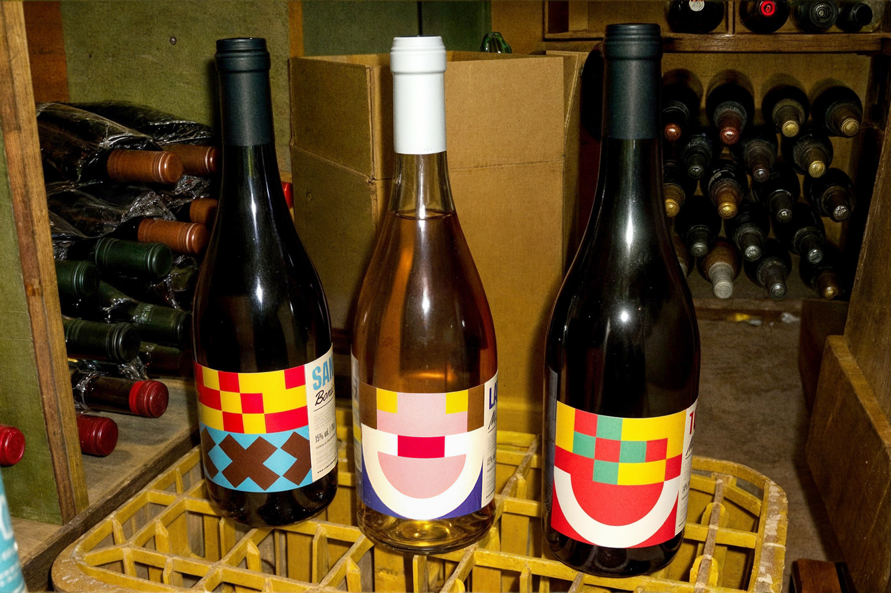
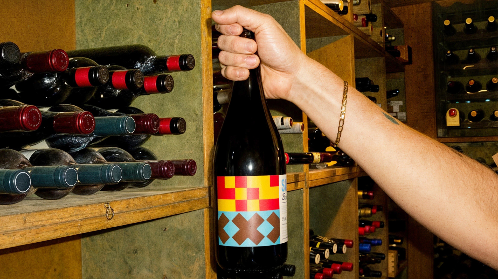
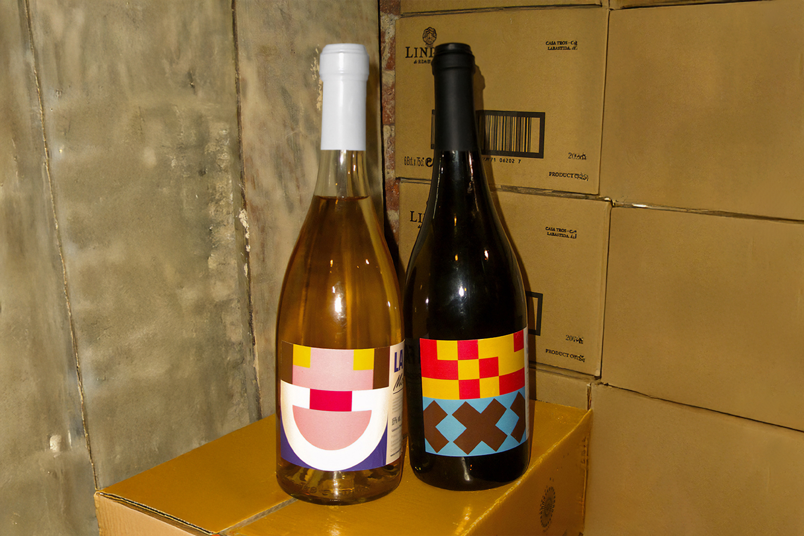
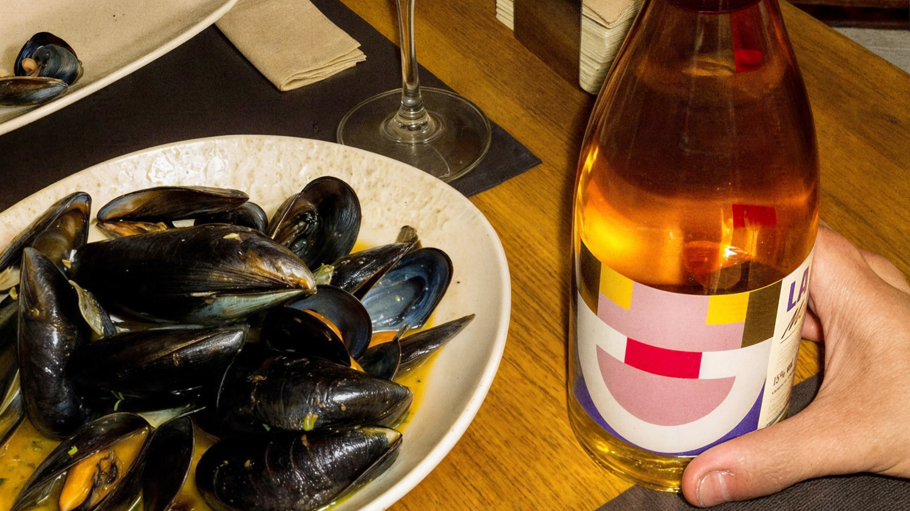
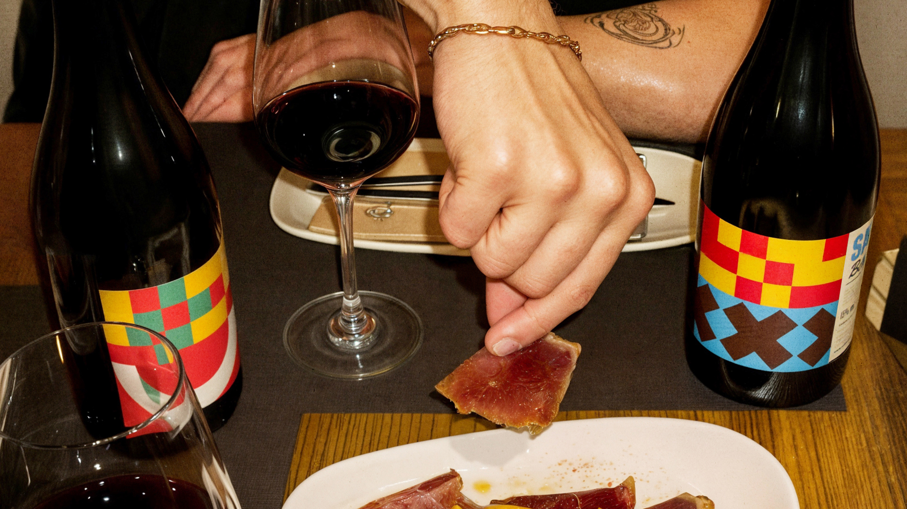
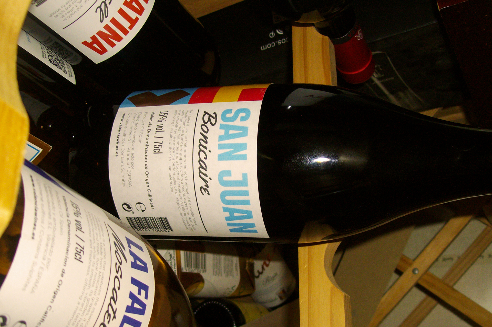

Valencia Wines
Wine Packaging for Valencia Wines
Valencia Wines · 2024 · Packaging · IllustrationEach wine in this collection is inspired by Valencian festivities, reflecting the unique character of each one. The designs feature a tile style, inspired by the typical hydraulic tiles used in the traditional houses of Valencia. The Fallera wine presents a smooth and elegant taste, evoking the fine dresses of the Falleras and the air of sophistication of this celebration.





